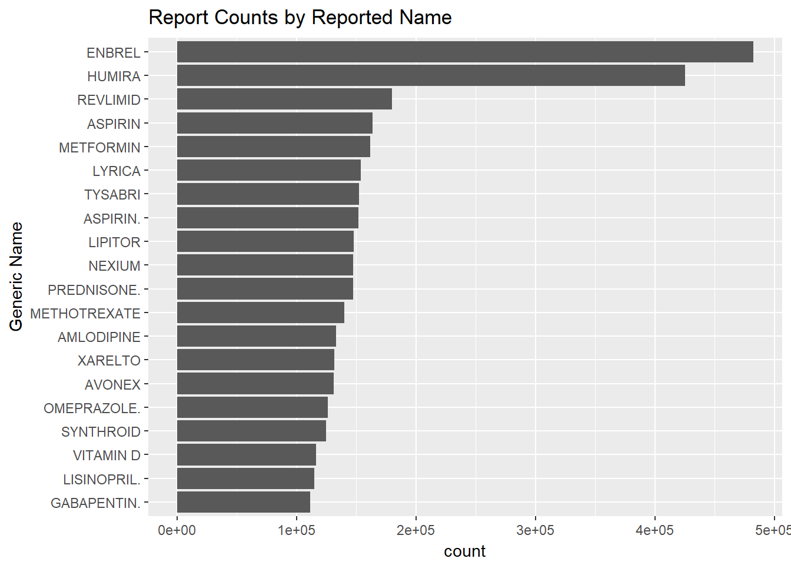

Initial Data Exploration
R Packages used in this analysis
library(httr)
library(jsonlite)
library(dplyr)
library(tidyr)
library(knitr)
library(kableExtra)High-Level Data Exploration
The goal of this Initial data exploration is multifaceted. With it, I hope to gain a better understanding of:
- The openFDA API syntax and how the options interact to influence query responses;
- the structure of response API JSON objects, what fields they contain, and how to process them;
- the availability and distribution of fields withing the data;
- and, the limitations or apparent biases within the data which could impact future analyses.
These insights will not only help with the selection and development of the Case Study for this interview, but will also allow me to better articulate how this data could be extended and utilized in future more-robust products and analyses.
To force myself to work more directly with the API syntax and response JSON data, I have chosen not to use the rOpenHealth openFDA package for this Initial exploration analysis.
Testing openFDA Syntax and basic response JSON structure
Based on the Initial Documentation Review we know there are two types of query options count and non-count. Count queries will return a table with count of the number of unique values of a selected field for the records which match the search (this is limited to a max of 1000 values). The alternative is the non-count query which returns an array of records which match the search criteria (limited to 100 records).
The code below downloads an example of each type using the same search criteria and can be found in the repository here. In this Initial code I’ve also included each step explicit step required to capture a response using the httr package
library(httr)
library(jsonlite)
#=== NON-COUNT QUERY EXAMPLE ===#
#- Let's find all records which mention a rash reaction
# 1) Define the query url
url = 'https://api.fda.gov/drug/event.json?api_key=umOJyfx1udGdQjn1XtT1XGasUjSbgiDIvsJ47jiB&search=patient.reaction.reactionmeddrapt:"rash"'
#- 2) Set get request to openFDA API and capture response
rash_response = GET(url)
#- 3) Convert response() object to text object (this will be the standard JSON formatted text)
rash_response_text = content(rash_response, as = "text")
#- 4) (Optional) Can save text copy of JSON
write(rash_response_text, "./data/json_extracts/rash_noncount_example.json")
#- 5) Convert text object to nested list using jsonlite
rash_list = fromJSON(rash_response_text)
#=== COUNT QUERY EXAMPLE ===#
#- Using the count option we can use the same seacg to get a count of reactions which accompanty rash reactions
url = paste(url, "count=patient.reaction.reactionmeddrapt", sep = "&")
rash_count_response = GET(url)
rash_count_response_text = content(rash_count_response, as = "text")
write(rash_count_response_text, "./data/json_extracts/rash_count_example.json")
rash_count_list = fromJSON(rash_count_response_text)Looking at the structure of the two files can be can be accessed here: Rash Count Response and Rash Records Response.
As you can see there are quite a few steps required to query the API, so I created a few simple functions to help streamline the query processes (and other functionality used in this Initial analysis like plots). The code for the functions can be found here
Response Meta Data
Both response types include the same disclaimer, terms, license, and last updated date information. However, the non-count response provides additional more-useful information, specifically results$total which provides the total number of records which matched the search regardless of how many were returned based on the set limit.
This information is useful not only to see how many records match the search, but also in situations when we want to download all of the records for a given search, but the total number exceeds the max limit of 100. Using the total records count we could set up function to iteratively query 100 records at a time (potentially in parallel) up to the total using the “skip” syntax parameter. In this case we can see that there are 360316 records which would require a minimum of 3604 individual query calls
Count Response Metadata
print(rash_count_list$meta)## $disclaimer
## [1] "Do not rely on openFDA to make decisions regarding medical care. While we make every effort to ensure that data is accurate, you should assume all results are unvalidated. We may limit or otherwise restrict your access to the API in line with our Terms of Service."
##
## $terms
## [1] "https://open.fda.gov/terms/"
##
## $license
## [1] "https://open.fda.gov/license/"
##
## $last_updated
## [1] "2019-12-14"Non-Count Response Metadata
print(rash_list$meta)## $disclaimer
## [1] "Do not rely on openFDA to make decisions regarding medical care. While we make every effort to ensure that data is accurate, you should assume all results are unvalidated. We may limit or otherwise restrict your access to the API in line with our Terms of Service."
##
## $terms
## [1] "https://open.fda.gov/terms/"
##
## $license
## [1] "https://open.fda.gov/license/"
##
## $last_updated
## [1] "2019-12-14"
##
## $results
## $results$skip
## [1] 0
##
## $results$limit
## [1] 1
##
## $results$total
## [1] 360316Count Response Data
When a count query is successful the retuned JSON provides a results table with two fields “term” and “count”. The “term” field contains the unique values associated with the count parameter field used in the query url. In this rash example we’re we used “patient.reaction.reactionmeddrapt” which are standard MedDRA terms.
Note: Since we did not include .exact at the end of the count parameter the counts will be for individual words within MedDRA terms. So, for example, if a record had a reaction vale “hot rash”, it would be included based on our search (since the value includes “rash”) and the count table would have a row for both “hot” and “rash” individually. The default limit for a count query is 100, so this count results table will have 100 rows for the terms with the 100 highest record counts.
Note: there is no way to “skip” when using count records so if a count field has more than 1,000 values (the maximum for a count query) there would be no way to easily retrieve the full table past the top 1,000 counts
Top Reaction Terms Appearing Along with Rash
kable(rash_count_list$results, format = "html", row.names = FALSE) %>% kable_styling() %>% scroll_box(width = "100%", height = "300px")| term | count |
|---|---|
| rash | 360316 |
| pruritus | 64230 |
| pain | 56492 |
| skin | 47123 |
| drug | 44434 |
| site | 39333 |
| erythema | 37060 |
| swelling | 33383 |
| generalised | 32932 |
| decreased | 32465 |
| increased | 30478 |
| pruritic | 29531 |
| disorder | 27756 |
| papular | 26430 |
| hypersensitivity | 25162 |
| injection | 25100 |
| fatigue | 24771 |
| blood | 24765 |
| erythematous | 23571 |
| nausea | 23435 |
| pyrexia | 23020 |
| diarrhoea | 21767 |
| urticaria | 20975 |
| infection | 20605 |
| oedema | 20421 |
| dyspnoea | 20053 |
| headache | 18962 |
| reaction | 18187 |
| macular | 18022 |
| in | 16843 |
| abdominal | 16646 |
| abnormal | 16615 |
| product | 16444 |
| peripheral | 16411 |
| of | 15415 |
| dry | 15197 |
| arthralgia | 13878 |
| vomiting | 13403 |
| discomfort | 13332 |
| sensation | 12889 |
| weight | 12762 |
| ineffective | 12524 |
| dizziness | 12428 |
| burning | 12150 |
| maculo | 12014 |
| application | 11847 |
| malaise | 11157 |
| asthenia | 11129 |
| syndrome | 10927 |
| exfoliation | 10888 |
| count | 10551 |
| face | 10354 |
| use | 10350 |
| feeling | 10227 |
| eye | 10000 |
| extremity | 9691 |
| cough | 9559 |
| blister | 9218 |
| haemorrhage | 9182 |
| chest | 9141 |
| disease | 9110 |
| insomnia | 9038 |
| appetite | 8884 |
| cell | 8773 |
| failure | 8693 |
| dermatitis | 8557 |
| irritation | 7974 |
| upper | 7861 |
| eosinophilia | 7798 |
| respiratory | 7693 |
| anaemia | 7596 |
| issue | 7464 |
| tract | 7443 |
| muscle | 7366 |
| systemic | 7346 |
| back | 7330 |
| pressure | 7091 |
| renal | 7038 |
| joint | 6957 |
| alopecia | 6955 |
| oral | 6949 |
| paraesthesia | 6824 |
| injury | 6694 |
| impairment | 6678 |
| myalgia | 6484 |
| label | 6454 |
| off | 6374 |
| constipation | 6158 |
| mouth | 6142 |
| musculoskeletal | 6021 |
| hepatic | 5960 |
| disturbance | 5925 |
| with | 5921 |
| pustular | 5917 |
| anxiety | 5894 |
| chills | 5867 |
| acne | 5838 |
| discolouration | 5779 |
| flushing | 5723 |
| depression | 5689 |
Example Count Table Plot
ggplot(rash_count_list$results[2:21, ], aes(reorder(term, count), count)) +
geom_bar(stat = "Identity") +
xlab("Reaction Term") +
ylab("Record Count") +
ggtitle("Top-20 Reaction Terms Appearing Along with Rash") +
coord_flip() Exact Whole Phrases vs. Individual Terms
Looking at the top terms retured by the “patient.reaction.reactionmeddrapt” field include words which are not informative like “site” or “decreased”. To help account for this openFDA allows for some fields to be searched and/or counted based on the full value not the individual words using the .exact suffix. Note: using .exact could be helpful in some search or count situations, however terms could be missed or undercounted due spelling or punctuation issues in some fields and should be used with some caution.
Below I’ve run the top-20 full reactions term counts for our original rash search to show the difference between counts with and without .exact. In this situation the list is much more informative than the prior count results.
Top-20 Full Reaction Terms Appearing with Rash
qList = list(search = 'patient.reaction.reactionmeddrapt:"rash"',
count = 'patient.reaction.reactionmeddrapt.exact')
countPlot(getResults(qList)[2:21, ], "Full Reaction Term", "Top-20 Full Reaction Terms Appearing with Rash")Exploring the Full Universe of Records Present in FAERS
Using the information gathered in the previous section we can begin to explore the universe records available in FAERS to get a better picture of how the data might be used (or not used because of limitations with query syntax functionality). Knowing what the distribution of key fields in the data look like will help navigate potential biases or limitations, while testing more-complex search terms will help determine how data should be queried based on its intended use.
Top Reported Reaction Events
It only makes sense that the first distribution we look at in the adverse reaction data are the top adverse reactions.
qList = list(
"count" = "patient.reaction.reactionmeddrapt.exact",
"limit" = 20)
countPlot(getResults(qList), "Adverse Event Type", "Top-20 Reported Adverse Events FAERS")Reporter Type
Looking at the type of individual submitting the event report we can see that nearly half of all reaction reports are submitted by non-health professional consumers. This is important information for future refence since it is possible (and probably likely) that health professionals will report different reactions at different rates. For example, health professional will probably have a higher relative proportion of severe adverse events (SAE) compared to consumers (something we will examine later). These differences may need to be considered when creating search criteria.
qList$count = "primarysource.qualification"
reporter_type_count = getResults(qList)
total_records = sum(reporter_type_count$count)
reporter_type_count$count = reporter_type_count$count / total_records
countPlot(reporter_type_count, "Reporter Type", "Report Counts by Reporter Type", mapCategories = "primarysource.qualification", returnPlotObject = TRUE) +
scale_y_continuous(labels = function(x) paste0(x*100, "%"))Report Location
Similar to reporter type, it will likely be important to know where reports are coming from. Not only could countries have different relative rates of reporting, but some fields in the reports (e.g., medical product) can be free text entry which may be impacted differently in non-English speaking countries. The figure below shows, unsurprisingly, that the vast majority of the reports in FAERS come from the USA. Further examinations of both the types of reactions reported and the type of individual doing the reporting will also likely vary between the US and other countries.
qList$count = "occurcountry.exact"
countPlot(getResults(qList), "Country", "Report Counts by Country of Occurance")Exploring AE Reporting
Reaction reporting severity could be a valuable search/count field available in the reporting data. Serious events are likely more reliably reported (especially by health professionals). In this section I’ll explore the rates at which reports are labeled “serious” (e.g., death, hospitalization, etc.) or not, and how the rates reported could vary by factors like reporter type and country.
Counts of Reports containing an AE and SAE
qList$count = "serious"
mapCategoryValues(getResults(qList), qList$count) %>% mutate(percent = format((count / sum(count))*100, digits = 4, nsmall = 0)) %>%
kable(.) %>% kable_styling()## Currently generic markdown table using pandoc is not supported.| term | count | percent |
|---|---|---|
| SAE | 6453837 | 57.77 |
| AE | 4717374 | 42.23 |
SAE and AE Reporting Rates by Reporter Type
compareAE = function(count_group, mapCatValues = FALSE, limit = 10){
qList = list(count = count_group, limit = 1000)
count_table = getResults(qList)
# ADD SAE COUNTS
qList$search = "serious:1"
count_table = merge(count_table, getResults(qList), by = "term")
names(count_table)[2:3] = c("total_reports", "SAE")
count_table$SAE_PCT = count_table$SAE / count_table$total_reports
# ADD AE COUNTS
qList$search = "serious:2"
count_table = merge(count_table, getResults(qList), by = "term")
names(count_table)[5] = "AE"
count_table$AE_PCT = count_table$AE / count_table$total_reports
# JUST CONFIRMING THAT SAE AND AE REPORT COUNTS ARE MUTUALLY EXCLUSIVE
count_table$net_pct = count_table$AE_PCT + count_table$SAE_PCT
if(mapCatValues) count_table = mapCategoryValues(count_table, qList$count)
count_table = count_table[order(-count_table$total_reports), ]
return(count_table[1:min(nrow(count_table), limit), ])
}
aeComparePlot = function(aeCompData, xLabText, stat_type = "count"){
plotData = aeCompData
if(stat_type == "percent"){
plotData = select(plotData, term, SAE_PCT, AE_PCT)
names(plotData)[2:3] = c("SAE", "AE")
}
plotData = select(plotData, term, SAE, AE) %>% gather(key = Event_Type, value = yVar, -term)
p = ggplot(plotData, aes(reorder(term, yVar), yVar, fill = Event_Type)) +
geom_bar(stat = "identity") +
xlab(xLabText) +
ylab(stat_type)
return(p)
}
aeComparePlot(compareAE("primarysource.qualification", mapCatValues = TRUE), "Reporter Type") + ggtitle("Severity by Country") + coord_flip()Severity by Country
aeComparePlot(compareAE("occurcountry.exact"), "Country") + ggtitle("Severity by Country")
aeComparePlot(compareAE("occurcountry.exact"), "Country", stat_type = "percent") + ggtitle("Severity by Country")aeComparePlot(compareAE("occurcountry.exact"), "Country") + ggtitle("Severity by Country")
Exploring Drug Names Within Reports
Another important piece of the openFDA data to explore is how drug names are presented in the data. Based on the initial document review, drug names are provided both in their raw form as provided by the person creating the report, and “harmonized” brand and generic names added by the FDA. Harmonizing adds additional RxNorm information for drug products with exact matches. Note: only products with exact matches will be harmonized so searching the harmonized fields will not search all reports; additionally, this missingness is likely non-random since it is dependent on spelling/punctuation
The figure below shows the top-20 “generic” drug names included in reports. It is clear from these results that even for the “harmonized” generic drug names, there still appear to be some duplicates and/or overlap when using the .exact suffix. See aspirin for example, it is included in the list multiple times with varying doses. It may also be possible that some of the counts are redundant (e.g., a single drug’s harmonized data may have aspirin and aspirin 81 MG listed within the same drug). Careful consideration will need to be take when querying drug name data. Things like spelling, use of exact, and combination drugs all need to be considered.
Top Harmonized Generic Drug Names Included in Reports
qList = list(count = 'patient.drug.openfda.generic_name.exact',
limit = 20)
countPlot(getResults(qList), "Generic Name", "Report Counts by Harmonized Generic Name")In contrast to the harmonized, the individual word counts for the raw reported drug names do not fully align with the harmonized generic name list. This is likely and indicator of a mix of brand and generic names used in the raw product reporting.
Top Raw Reported Product Individual Terms
qList$count = "patient.drug.medicinalproduct"
qList$limit = 20
countPlot(getResults(qList), "Reported Name", "Report Counts by Reported Name")Interestingly, when using the .exact syntax with the raw names two drugs (Humira, Enbrel) have significantly higher record counts compared all of the other drugs in the list.
qList$count = "patient.drug.medicinalproduct.exact"
qList$limit = 20
countPlot(getResults(qList), "Generic Name", "Report Counts by Reported Name")
qList$search = "patient.drug.medicinalproduct:METFORMIN"
qList$count = "patient.drug.medicinalproduct.exact"
qList$limit = 1000 #counts are limited to 1000 results
raw_met_count = getResults(qList)
raw_met_count = raw_met_count[grepl("METFORMIN", raw_met_count$term), ]
names(raw_met_count)[2] = "raw_count"
kable(raw_met_count, row.names = FALSE) %>% kable_styling()## Currently generic markdown table using pandoc is not supported.| term | raw_count |
|---|---|
| METFORMIN | 161718 |
| METFORMIN HCL | 54484 |
| METFORMIN HYDROCHLORIDE. | 12863 |
| METFORMIN HYDROCHLORIDE | 6814 |
| METFORMIN (METFORMIN) | 1737 |
| METFORMIN ER | 616 |
| METFORMIN (UNKNOWN) | 507 |
| GLYBURIDE AND METFORMIN HCL | 470 |
| GLUCOPHAGE /USA/ (METFORMIN HYDROCHLORIDE) | 351 |
| METFORMIN HYDROCHLORIDE ER | 339 |
| GLYBURIDE/METFORMIN | 300 |
qList$search = "patient.drug.openfda.generic_name:METFORMIN"
qList$count = "patient.drug.medicinalproduct.exact"
qList$limit = 1000
generic_met_count = getResults(qList)
generic_met_count[grepl("METFORMIN", generic_met_count$term), ]## term count
## 1 METFORMIN 161718
## 2 METFORMIN HCL 54484
## 16 METFORMIN HYDROCHLORIDE. 12863
## 44 METFORMIN HYDROCHLORIDE 6814
## 870 METFORMIN HYDROCHLORIDE ER 339write(content(GET(createQuery(list(search = 'patient.drug.medicinalproduct:"METFORMIN+(UNKNOWN)"'))), as = "text"), file = "./data/json_extracts/METFORMIN_UNKNOWN_example.json")